Home / Past papers / MLF Quiz 2 / this paper
IIT M FOUNDATION AN4 EXAM QPF4 06 Aug 2023 - 06 Aug 2023
Elapsed 00:00
Which among the following is/are true for a Hermitian matrix?
- The eigenvalues of a Hermitian matrix are always real.
- The diagonal elements of a Hermitian matrix are always real.
- All symmetric matrices are Hermitian.
- All Hermitian matrices are symmetric.
Which of the following options are true?
- A matrix that is both unitary and Hermitian must be a diagonal matrix.
- A matrix that is both unitary and Hermitian need not be a diagonal matrix.
- If matrix A is unitary, then A* is unitary.
- If matrix A is unitary then, A* may not be unitary.
Which among the following statements is/are true?
- If a function is positive semidefinite, then it only has a global minimum.
- If a function is positive semidefinite, then it has both global minimum andglobal maximum.
- If a function is negative semidefinite, then it only has a global maximum.
- If a function is negative semidefinite, then it has both global minimum andglobal maximum.
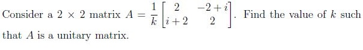
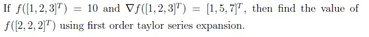
Which among the following functions are positive definite?


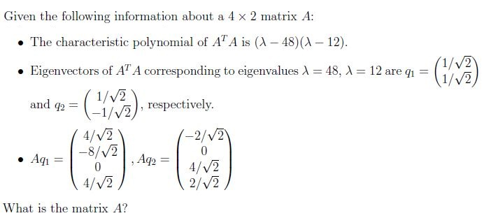
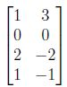
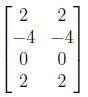
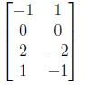
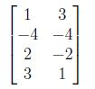
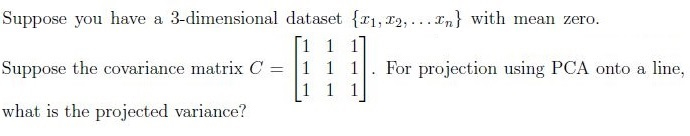
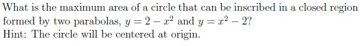
Comprehension passage - the questions below it refer to this
Anwer the given subquestions.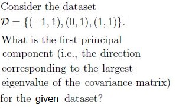
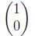
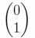
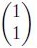
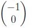
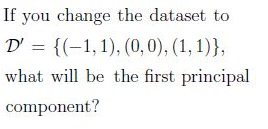
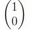
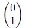
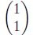
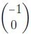
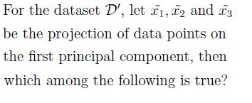
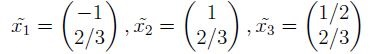
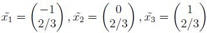
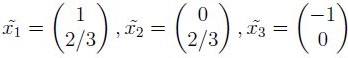
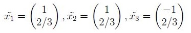
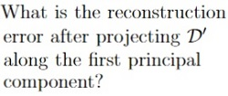